27 August 2026 · exact head 68072486b5c2f886aef49363cf625647dbb73a4e
Bones 58/100 · Game today 38/100. Retain the simulation/Pixi kernel. Repair proof and control defects, collect human fun evidence, then establish run/room/weapon ownership before content scales.
Full Markdown report · 72 simulation runs · Browser performance · Invariant probes · Independent critique
Continuous keyboard play, listening, physical gamepad, Safari/Firefox, and release performance remain unverified. The 200-bolt renderer case extended the pool in memory. Strips contain nonuniform selected ticks; they are not timed playback.
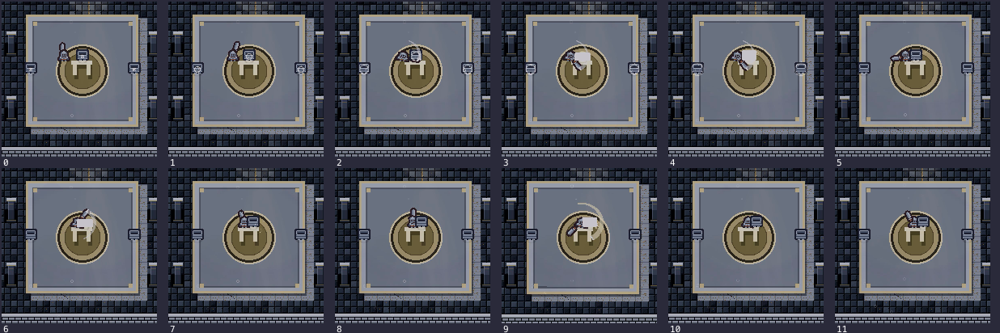
Exact ticks and state trace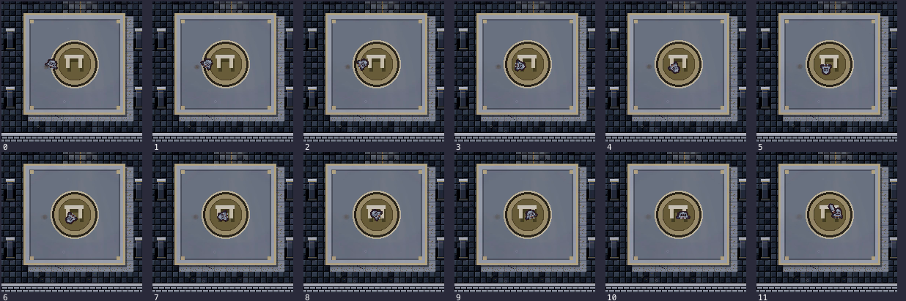
Exact ticks and state trace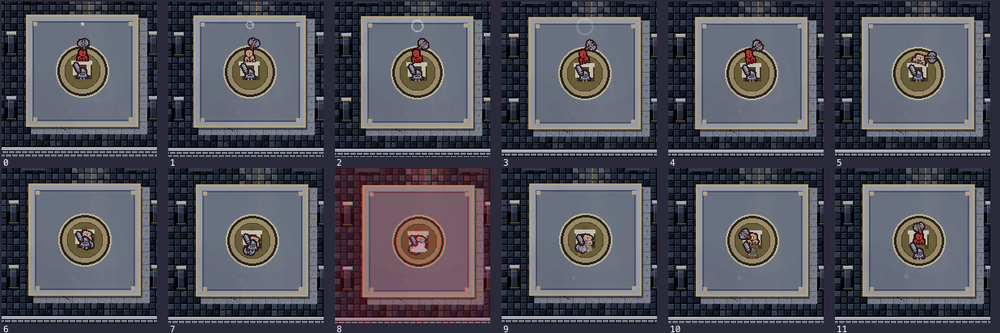
Exact ticks and state trace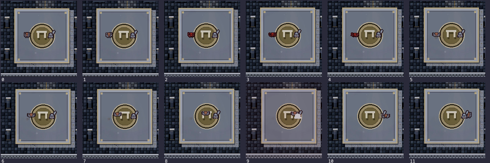
Exact ticks and state trace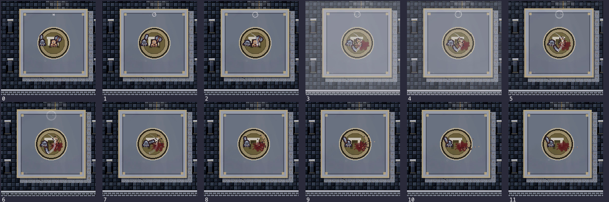
Exact ticks and state trace29 poses; source tool has no per-pose success assertion
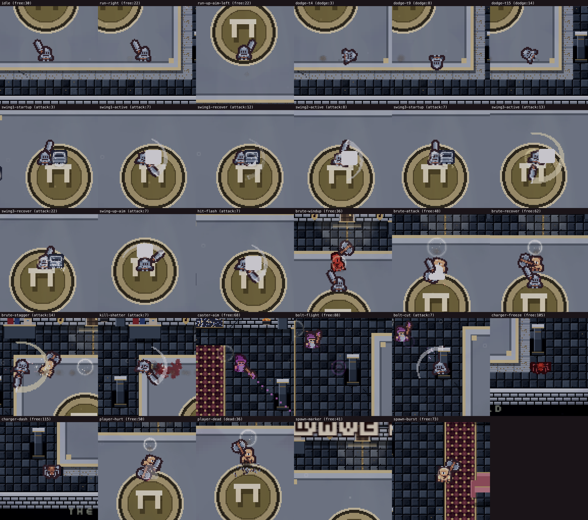
Seed 1, tick 60
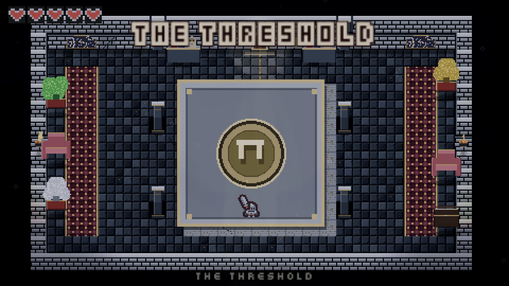
Tick 8, active hit geometry
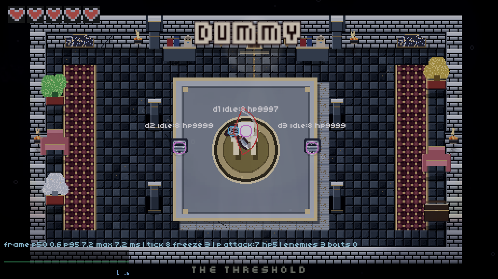
Stock stepwise call, tick 60
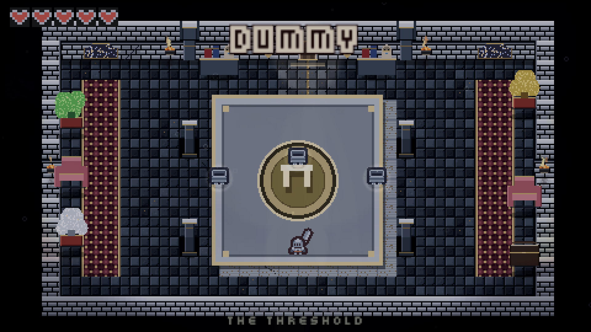
Tick 210, naive-melee
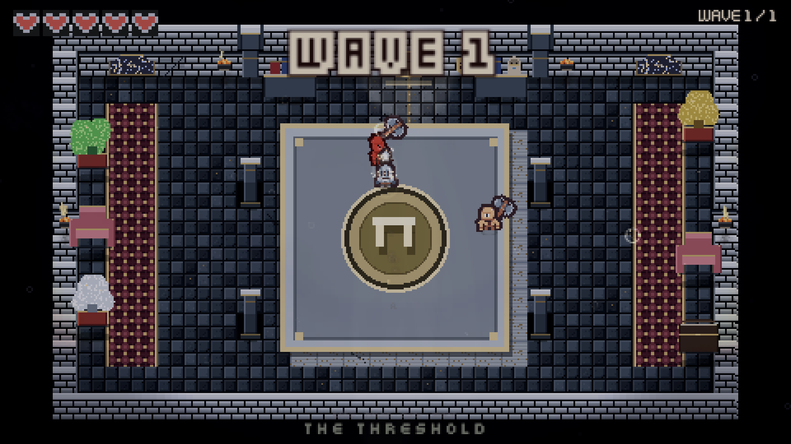
Tick 335, god-mode kite, active Charger dash
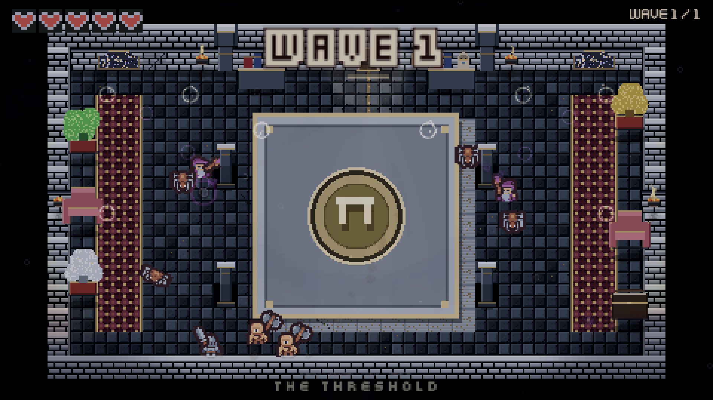
Tick 2438, HP 1; bulk capture effects differ from a real-time playthrough
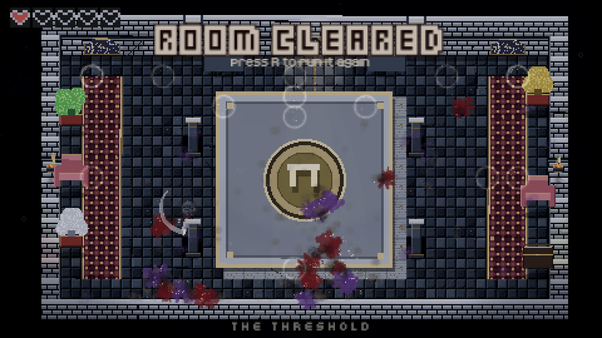
Tick 556; simulation dead while presentation banner still catches up
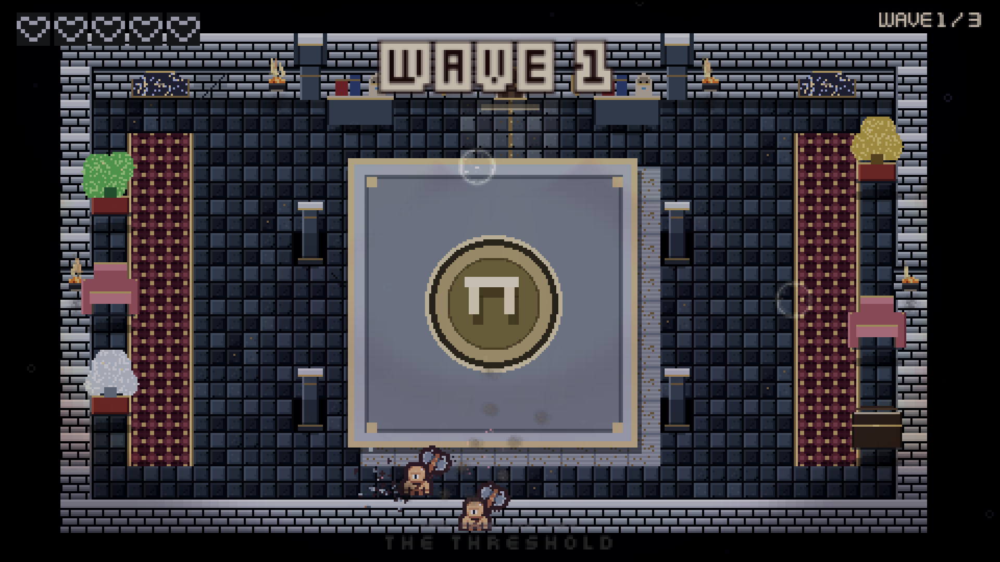
Tick 600; banner timer explicitly cleared to inspect final death UI
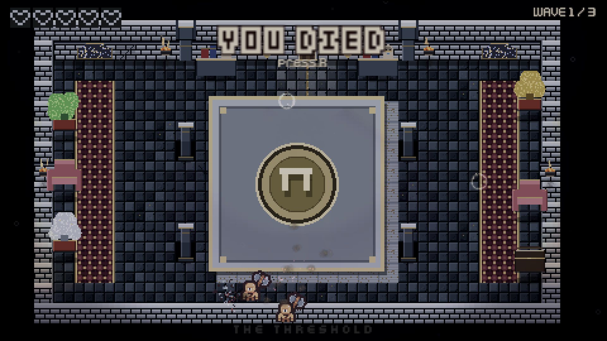
End of full replay fixture
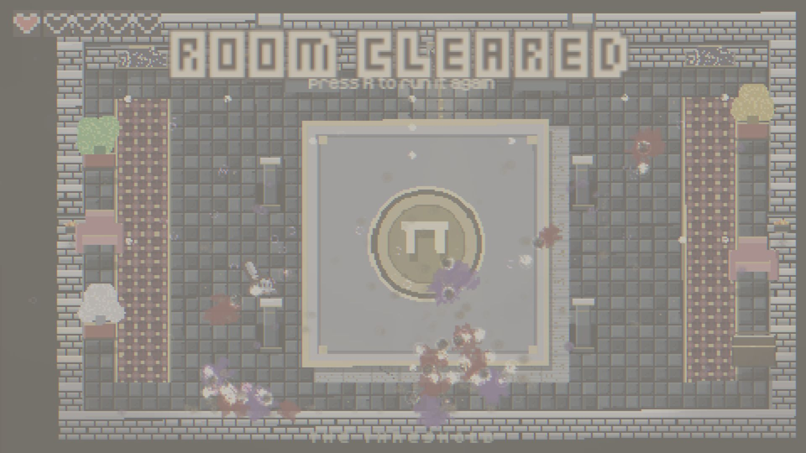
Observed requested tick 0; no reproduced overshoot
900x506, DPR 1
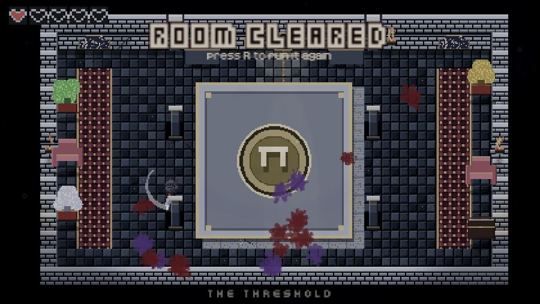
390x844, DPR 1, horizontal crop
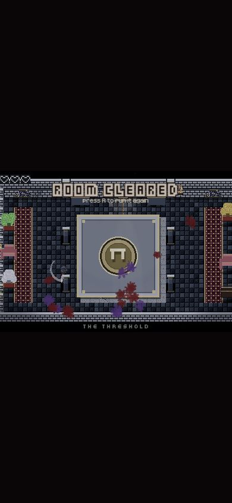
Our empty frame / supplied Gungeon boss still
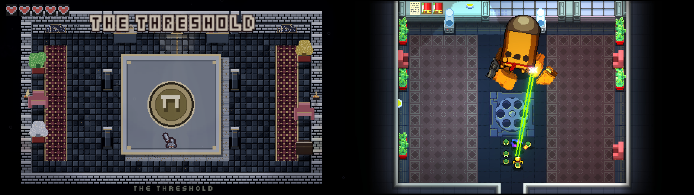
Same pair reversed; one critic
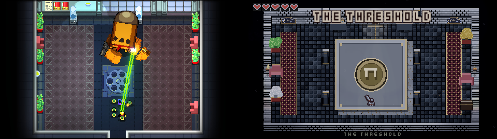
Our wave1 frame / supplied Hades combat still
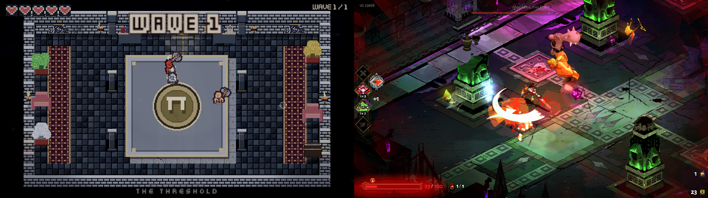
Exhibits 1 through 4 are the individual normalized pair inputs
One frame per second from official 22.5 s Gungeon website video
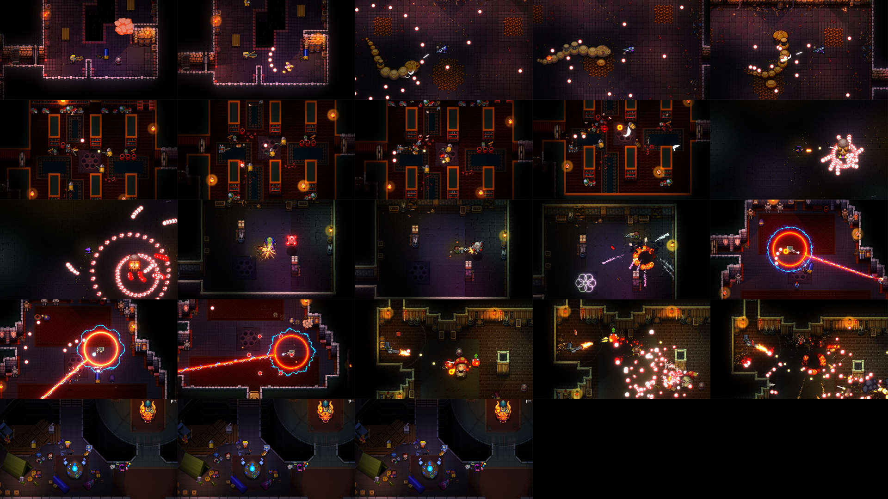
9–11 s; 6 frames per second; final two cells cross a source edit
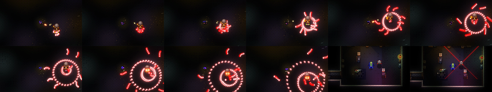